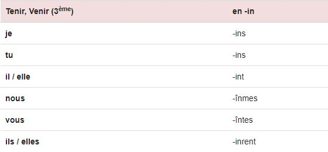
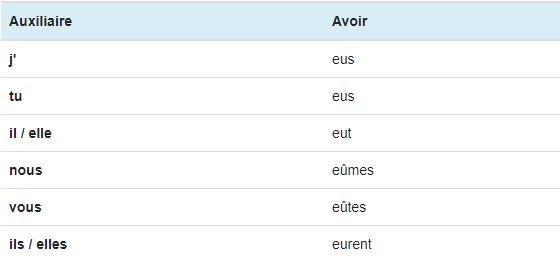
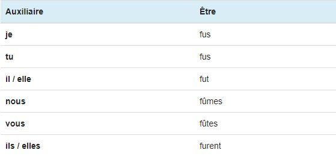

Le Passé Simple
Utilisation
Le passé simple est utilisé pour décrire une action qui a eu lieu et qui s'est achevée dans le passé. C'est un temps simple surtout utilisé à l'écrit comme temps de narration, c’est-à-dire celui dans lequel sont exprimés les événements achevés successivement, considérés comme essentiels, de premier plan, qui constituent la trame d'un récit.
Terminaisons
Contrairement à l'imparfait, il n'existe pas un seul type de terminaisons au passé simple. Chaque groupe de verbe possède un type de terminaisons, le 3ème groupe possède même 3 types de terminaisons:
- Les verbes du 1er groupe et le verbe aller (du 3ème groupe) possèdent des terminaisons en -a
- Les verbes du 2ème groupe et certains verbes du 3ème groupe possèdent des terminaisons en -i
- Certains verbes du 3ème groupe possèdent des terminaisons en -u
- Enfin, les verbes tenir, venir et leur dérivés (3ème groupe) possèdent des terminaisons en -in 


Auxiliaires
Voici la conjugaison des deux auxiliaires avoir et être au passé simple de l'indicatif. Ces deux auxiliaires au passé simple permettent notamment de construire le passé antérieur de l'indicatif.
 